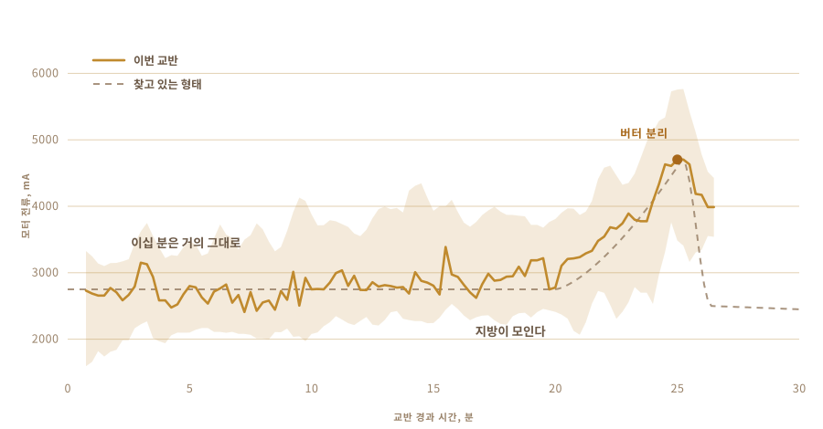

01
먹어 본 적만 있었다
내가 아는 기(ghee)는 시골에서 왔다. 다 쓴 유리병에 담겨서, 아주 오래 같은 방식으로 만들어 온 사람들의 손에서 왔다. 너무 오래 같은 방식이어서 그곳에서는 아무도 그걸 기술이라고 생각하지 않는다.
가게에서 파는 깡통에 든 것과는 맛이 다르다.
그리고 나는 한 번도 직접 만들어 본 적이 없었다. 우유를 얼마나 두어야 하는지, 요구르트를 어디까지 차게 해야 하는지, 다 된 냄비가 어떤 소리를 내야 하는지 아무것도 몰랐다.
02
생크림이 아니라 요구르트에서 시작한다
공장에서 나오는 기는 대부분 크림에서 시작한다. 전통적인 방법은 하루나 이틀 먼저 시작한다. 크림, 실은 끓여서 졸인 전유를 발효시켜 요구르트로 만들고 하룻밤 그대로 두어 시어지게 하는 것부터다.
그 시어지는 단계가 결정적이다. 건너뛰면 나오는 것은 정제 버터다. 그것도 훌륭하지만 기는 아니다.

03
이틀을 밖에 둔다
따뜻한 우유에 어제 만든 요구르트를 한 숟가락 저어 넣고, 그다음에는 밤새 그냥 둔다. 박테리아가 알아서 한다. 나는 이틀을 그대로 밖에 두었다.
그게 발효이고, 공장에서 나오는 쪽이 건너뛰는 단계다. 살아 있는 균, 대부분 락토바실루스가 유당을 분해해서 젖산으로 바꾼다. 우유는 되직해진다. 시어진다. 아침이 되면 다른 것이 되어 있다.
좋은 건 전부 여기서 나온다. 유당이 쪼개져서 속이 편해진다. 지방과 단백질이 더 잘 흡수된다. 그리고 부티르산, 장 점막이 실제로 연료로 쓰는 짧은 사슬 지방산이 생긴다. 단 크림으로 바로 만든 기보다 이렇게 만든 기에 더 많이 들어 있다.
아유르베다는 아주 오래전부터 바로 이 방식을 처방해 왔다.
내가 말할 수 있는 건 그 냄새를 만드는 게 발효라는 것이다. 이걸 다 할 이유의 대부분이 그 냄새다.

04
이 방법에는 이름이 있다
빌로나. 요구르트를 냄비에 담고 나무 교반기를 넣은 다음, 버터가 포기하고 떠오를 때까지 앞뒤로 돌린다.
교반기는 직접 만들었다. 인터넷에서 찾을 수 있는 것은 다 접착제로 붙인 것이었고, 어떤 접착제인지 알려주는 곳은 하나도 없었다. 그게 삼십 분 동안 음식 안에 들어가 있다. 그러니 추측으로 넘길 일이 아니었다. 단단한 나무, 스테인리스 나사, 그리고 서랍에 이미 있던 교반 샤프트에 볼트로 고정했다.
날개 네 개와 그 날개를 직각으로 잡아주는 스틸 밴드. 전부 나사라서 다시 분해된다.


삼십 분쯤 걸리고 그 대부분은 아무 일도 일어나지 않는다. 그래서 다른 무언가에게 넘기는 상상을 하게 되는 딱 그런 일이다.

05
그래서 물어봤다
이걸 실제로 아는 사람들은 레시피를 보고 하지 않고, 그중 누구도 우리 집 주방에 없었다. 그래서 질문은 대신 채팅창으로 들어갔다.
얼마나 발효시킬지. 요구르트를 얼마나 차게 둘지. 마찰로 냄비가 데워져서 버터를 망치기 전까지 얼마나 빨리 돌릴 수 있는지. 답이 하나 나올 때마다 질문이 세 개 더 생겼다.
그러다 내가 정말 하고 싶었던 질문을 했다. 그냥 네가 해줄 수 있어?
질문은 더 이상 기를 어떻게 만드느냐가 아니었다. 네가 나를 위해 만들어 줄 수 있느냐가 되었다.
06
야수
코드리스 드릴 하나. 서랍과 철물점에서 온 교반기. 전자부품을 담을 플라스틱 반찬통, 척추 역할을 할 도마, 그리고 커다란 노란색 정지 버튼. 모터가 달린 것에는 그게 있어야 하니까.
거의 돈이 들지 않았고, 보기에도 그렇다. 그리고 그게 어느 정도는 핵심이다.

- 모터코드리스 드릴, 클램프에 물려서
- 교반기단단한 나무와 스테인리스, 사지 않고 만든 것
- 두뇌Raspberry Pi, 1초에 한 번 기록
- 감각교반에는 모터 전류, 가열에는 온도 프로브
- 정지큰 버튼 하나, 전원을 끊도록 배선
07
돌리는 건 쉬운 쪽이다
요구르트는 누구나 돌릴 수 있다. 어려운 건 언제 멈출지 아는 것이다.
일찍 멈추면 되직한 거품만 남는다. 너무 오래 돌리면 버터를 다시 버터밀크 속으로 때려 넣어서 잃어버린다. 그 구간은 지방에 따라, 온도에 따라, 그날이 어떻게 흘러가느냐에 따라 움직인다.
이걸 시간으로 재는 사람은 없다. 소리로 듣는다. 출렁이는 소리가 매끄러운 회전에서 불규칙하게 때리는 소리로 바뀌는데, 그때 손을 넣는다.

08
감각 하나, 그것뿐
그래서 감각을 하나만 줬다. 모터가 얼마나 세게 끌고 있는지를 본다.
이십 분 동안은 아무 일도 없다. 부하는 2700 mA 근처에서 이리저리 움직인다. 그러다 지방이 모이기 시작하면 드릴은 더 되직한 것을 밀어야 한다. 4700까지 올라가서 잠깐 그대로 있고, 그다음에 버터가 액체를 놓으면서 부하가 떨어진다.
카메라도 없고, 모델도 없고, 영리한 것은 아무것도 없다. 올라갔다가 떨어지는 숫자 하나.

09
혼자서 멈췄다
돌아갔다. 나는 가서 다른 일을 했고, 돌아왔을 때 장치는 스스로 꺼져 있었다.
연노란 버터 알갱이가 뿌연 버터밀크 속에 떠 있었다. 시간을 알려준 사람은 없었다. 느낄 수 있는 유일한 것에서 그걸 알아냈다.

10
다시 손으로 돌아간다
알갱이를 모아서 한 덩어리로 뭉친다. 찬물에 헹구고 또 헹군다. 물이 더 이상 뿌옇지 않을 때까지.
남겨 둔 버터밀크는 한 방울까지 다음 단계에서 전부 탄다. 이 부분은 자동화하지 않았고, 하고 싶지도 않았다.


11
두 번째 감각
모터 부하는 장치에게 언제 멈출지 알려줬다. 가열은 다른 문제다. 이제는 한 순간을 찾는 게 아니라 한 상태를 붙잡아 두려는 것이기 때문이다.
그래서 냄비는 온도 프로브를 꽂은 핫플레이트에 올라가고, 교류 전력 조절기가 판을 켜고 끄면서 숫자를 정해 둔 자리에 붙여 둔다. 250 F, 그러니까 섭씨 121도로 맞춰 두었더니 한 시간쯤 그대로 있었다.
한 시간 동안 냄비를 지켜보는 사람은 어느 순간 집중이 흐트러진다. 조절기는 지루해하지 않는다.

12
한 시간 동안 색만 본다
버터를 냄비에 넣으면 그다음은 대체로 알아서 간다.
녹는다. 하얗고 요란하게 거품이 인다. 물이 날아가면서 소리가 잦아든다. 유고형분이 가라앉아 갈색이 되고, 냄새가 버터에서 뭔가 구운 것으로 옮겨 간다. 냄비가 조용해지고 액체가 맑아지면 끝이다.
그래도 대부분 지켜봤다. 보기 좋은 것이기 때문이다. 하지만 내가 한 어떤 것도 결과를 바꾸지는 않았다.


13
기
맑고, 호박색이고, 내가 어릴 때 꺼내 먹던 병의 냄새가 난다. 내가 가진 시험은 그것뿐이었고, 통과했다.

따뜻하고 맑은 채로 병에 들어갔다. 다음 날이 되자 연노랗게 알알이 굳어 있었다.
병에 라벨을 붙였다. 거기 적힌 단어는 네팔어로 기를 뜻하고, 옆에 있는 코드는 이 페이지로 돌아오게 한다.

내가 만든 첫 배치다. 사실 내가 만든 건 아니다.
14
두 번째에는 아홉 병
첫 번째는 두 병이 나왔고 그게 전부였다. 이번에는 난간이 찼다.
아홉 병. 카메라에 가장 가까운 쪽에 키 큰 스크류 뚜껑 두 개, 가운데를 지나는 클립 뚜껑 여섯 개, 그리고 저 끝 기둥 아래에 작은 것 하나.

라벨이 달라졌다. 첫 두 병은 위에 OUR STORY가 찍힌 분홍 종이 라벨을 달고 있었다. 이번 것은 투명 필름이라 글자 뒤로 기가 비쳐 보이고, 옆에 있는 코드는 여전히 이 페이지로 데려온다.


첫 번째와 같은 연한 노란색으로 굳었는데, 그럴지는 확신하지 못했다.
15
다음에 하고 싶은 것
지금 이 기계가 아는 건 두 가지다. 언제 교반을 멈출지, 그리고 어떤 온도를 유지할지.
다음에는 눈과 귀를 주고 싶다. 카메라를 달아서 거품이 꺼지고 고형분이 갈색으로 변하는 걸 보게 하고, 내가 건네준 숫자를 지키는 대신 열을 스스로 고르게 하고 싶다. 그리고 마이크. 기가 다 됐다는 걸 알려주는 것 중 많은 부분이 냄비가 조용해지는 것이기 때문이다.
드릴도 아마 두 번째 일을 할 수 있다. 버터가 냄비에 들어가면 저어 줘야 하고, 바로 그 자리에 아무것도 안 하고 있는 모터가 이미 있다.
그다음은 루프다. 발효 시간을 바꾸고, 속도를 바꾸고, 나온 것을 맛보고, 잘된 것을 남기고, 다시 한다. 서른 번 돌리면 내가 찾아볼 생각조차 못 했을 어딘가에 도착할 것이다.
애초에 어디를 봐야 하는지도 제대로 몰랐으니까.
무엇으로 만들었는지, 어디서 재는지, 이 장치가 실제로 무엇을 보는지.